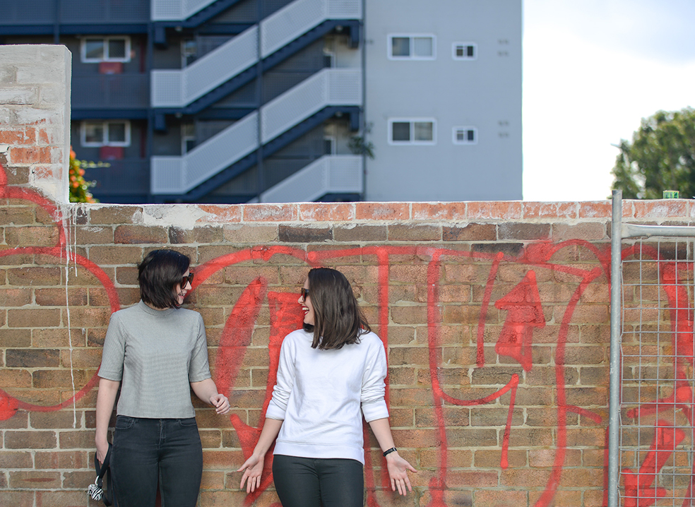

Bowerbirds - The Boweress
Navigating the digital landscape with confidence
26 February, 2017
You’ve just gone freelance…tell us a little about where you were before and what made you decide to jump into your own work?
I loved present company, the people were so smart and talented but I really wanted to make a change in my life. I thought moving brand side would be the natural progression. I was worried about self fulfilment and having somewhere to go each day. You go from working in this fast paced environment to being the master of your own time. I wanted to make sure my next place was equally or more amazing and at the same time I started to do really well in my own stuff. Its only been 3 moths and its very transitional yet Im really fulfilled in the varied work Im doing at the moment.
I’ve learned a lot being freelance as the number 1 thing is I have to execute everything now as opposed to having a team facilitate that for me. I have to put myself out there and be clear about what I want to charge. There have been a few sticky situations early on where there has been a loose start which nets out into oh this is our budget which is less than a third of what I would normally get. The way I have worked it out is through a formula of what I would get if I was in a Salary position minus annual leave, sick days etc. Now when people contact me or reach out I state my lower and higher end scale. This is something that has happened through having bad situations where Im already in an office and started to create work.
What’s your latest project?
Its my personal business, getting my website done and finding the best platform builder. What has been amazing is that since my first portfolio I built 5 years ago there’s so much more on offer like squarespace. I wish I had thought up the startup of websites for dummies as I’d be killing it right now (laughs). I’m working at DDB at the moment and the past couple of weeks have really picked up for me. Everything so far though has been the result of friends pointing me in the right direction. I owe them big time at the moment. For me to be able to split my time across multiple offices at multiple times would be ideal. It seems that the workforce is going towards this more hybrid generalist approach where people are not necessarily experts at any one thing but they have an ability to do multiple skills which allow them to manage projects in a end to end way. Whereas that could traditionally make you supremely unemployable it seems that its now seen as being passionate.
What are some of things you implemented from your past positions in order to make that transition?
I’ve always been a project manager since I started at my first agency like 10 years ago. That way of approaching a situation or a scenario to figure out what is the end goal, what are the obstacles, how do we get from a to b on time and on budget. That has served me very well in that now when I get a brief from an agency if I was myself in an agency there would be all these questions I ask…I started to realise why would I not treat myself as a business that needs to be briefed when I would happily say to a client you haven’t briefed me well enough.
How do you stay motivated as a freelancer?
Every morning when we was up we open all our blinds, metaphorically, flipping the closed sign to open, thats a cute little process. When I get up I make the bed immediately. If the bed is not made, my world is chaos (laughs). Having Sam for a husband is such a great motivator as he is super regimented and only 2 years into his own business. He has a really good process in where he gets up in the morning really early, he goes to the gym, comes home, answers a few emails then he goes and has breakfast, gets coffee, comes back. Im loosely getting up when he’s going to have breakfast (laughs). I’m getting better but in the beginning it was hard to get motivated. If it was up to me I would keep working till 10 o clock at night and use my mornings for my own things but it is nice to feel like you’ve achieved something in a regular work day and pack up around 7.
What’s been really nice about working for myself has been the creative process in that I now have the time to dwell on a brief as opposed to trying to manage team members and time. Its been lonely but rewarding in that Im only relying on myself. Its nice to know that you are capable of doing that. Its been daunting to go back to the grindstone but Ive now realised that I can come up with creative solutions.
How has working with numerous brands allowed you to define your own aesthetic?
That’s a great question! In terms of project management and strategy those things are the same across the board. As a result of 10 years experience, I have a process that works for me personally. Attention to detail is something that didn’t come easily to me. This is something that I really worked on as I was hence always focused on it as a weakness. Proofreading is so hard for me as Im always consuming content , I try to read 5 books a week, I read for probably 3 hours a day, to me its a horrible experience as my brain skips things, might have to get that checked (laughs) might be a form of dyslexia. I have a distinct personal taste that stays the same yet the aesthetic does and should change depending on the product or brand. The tone of voice and the visual is tailored to the project at hand.
What’s your stance on technology free time…ever turn off your phone?
Reading is a coping mechanism for me as it’s check out time but it’s active checkout time. Im a pretty anxious person in general so reading before bed gets me to a point where Im exhausted. Its active relaxation but I don’t know what that says about me (laughs). I read either on my kindle app for iPad , like a 60 year old woman (laughs) Sometimes Ill be on the couch watching netflix whilst having my macbook and phone, consuming multiple things at any one time. Ive never really thought about this but now Im realising the volume I’m consuming and it’s kind of stressing me out, maybe I need to go read for a couple of hours (laughs). One app that I have got recently which has changed one of my work processes, which is writing, is Ulyses for mac, it strips out all the formatting and closes all other programs which is helpful so I can punch out copy which is where I procrastinate and get distracted a lot.
I do believe it’s important to have those times where you’re not consuming which for me is going to the gym and exercising which is still a hectic environment but you are doing a repetitive motion or in the shower, actual time way from devices.
You just came back from a huge trip through America, what did you take home with you professionally and personally?
These are such good questions! So, professionally, my brother lives in San Fransisco, we are super close. He is a real inspiration to me in life as he is so successful in so many ways. I loved spending time with him but he also gave me access to people in tech and art scenes. He has a great group of friends there, all entrepreneurs in some way, one is a seed funding guy, an illustrator and graphic facilitator, a ballerina… Its this wonderful mix of tech and art and that personally was inspirational as they are creating their own creative, unique, niche jobs. For me as someone who is very process driven and overthinks, it was a revelation to see people creating their own path whereas Im always about what is the best way to get me from A to B. A good friend of my husband’s works at airbnb, we got to go to office, that was amazing!. Ive always been proud of my colour coded waterfall and cacade timelines, yet to see their waterfall timelines, 8 pieces of A0 paper stitched together with 1000 lines!, they are legit experts! It put into perspective what a small scale it is what you’re doing and how important it is to be fulfilled in the work that you are doing.
Personally, it was wonderful to spend so much time with my husband. We’re so co dependent that we can spend an insane amount of time together to the point where it’s maybe not so healthy (laughs) Being on the road driving around was so incredible, it really enforced what a good team we are and how well we work together. He’s driving , I’m navigating how to exit of L.A highways (laughs). We are very lucky in that we travel a lot but they tend to be either beachside resort or city loft style. Here, we were in death valley, with no internet. I couldn’t consume anything. We went to 4 national parks and it was during national park week so there were lots of celebrations. This was a nice retreat to wilderness and to see el capitan up close, these massive sand dunes and salt flats and feel like you’re essentially on Mars. Ive always said “Its the best of times and the worst of times” when referring to U.S.A.
How important is it for you to stay connected, socially and emotionally?
I have a love/ hate relationship with my phone. I’m so ambivalent about it being charged and ever since I’ve started playing pokemon go thats trashing my battery. My phone is always there as a way to consume content but I will always zone out on communicating with people , not as avoidance but the constant communication now is something that stresses me out about being connected. I want to talk to my friends regularly but when you’re getting pinged constantly it’s hard to maintain focus on work. I would rather go and see someone, walk, see a movie.
What’s your background relationship with Pokemon, did you collect cards, watch shows? Im interested to know how many people are jumping on this wagon with no prior knowledge or mainly interest in Pokemon.
As I was eating my breakfast before I left for school, pokemon cartoons would be on in the background. Where my interest started is that when I was a child I had a chubby face and I’m pretty pale but also pink (laughs). One of my nicknames was jiggly puff and I thought yeah that’s an adorable nickname (laughs), I’m going to own that!
Female influences?
This is going to sound so lame but Dolly Parton (laughs). She is a hardcore business bitch. She was so physically beautiful when she was young, became a superstar in a male dominated world, got married when she was like 12, and is still married to that guy! She created Dollywood and then she has diversified her fame into all these different arenas. Plus, she’s super entertaining and is so witty with words. I will be having conversations with my girlfriends and say well you know like Dolly parton always says “never put your light under a bushel for anyone else” and so for me personally I think she’s great! I also like Tanya Plibersek , I think she’s pretty cool.
What’s your stance on the everchanging scene of social media? The importance and where you think it’s headed?
I’m by no means an expert, I’m excited that its constantly evolving and changing. A billboard hasn’t changed much in essentially 60 years whereas social media changes every week. So much of the creative is dependent on the platform itself. Regraming, sharing, liking ,emojis, all these types of things are things that you have to think of when you’re coming up with a creative solution. There are a lot more variables involved in social media.
I think unfortunately or fortunately its going to be even more integrated into our lives. The boundaries will bleed a lot more, as we continue to live in a connected life. I m excited and terrified in that I love all the opportunities it provides yet it is almost impossible to have any privacy. Taking a user need and creating a tech solution which suits is really cool, but can both facilitate and hinder human connection.
What are you currently reading?
(laughs) This is going to sound so douche baggy, Im heaps into African Literature at the moment (laughs) and Ill tell you why. When I was studying at University, one subject was Modernity and African Literature, which I almost failed as I never went to class, blagged my way through exams and maybe read 2 out of the 12 prescribed texts.(laughs) I was cleaning out my bookcase and it was personally crushing to me that Id never read them so that’s what im reading now.
Photography by Mark Sherborne at MJS Pictures at Louise’ residential home in Sydney’s inner west. www.louiseacret.com
